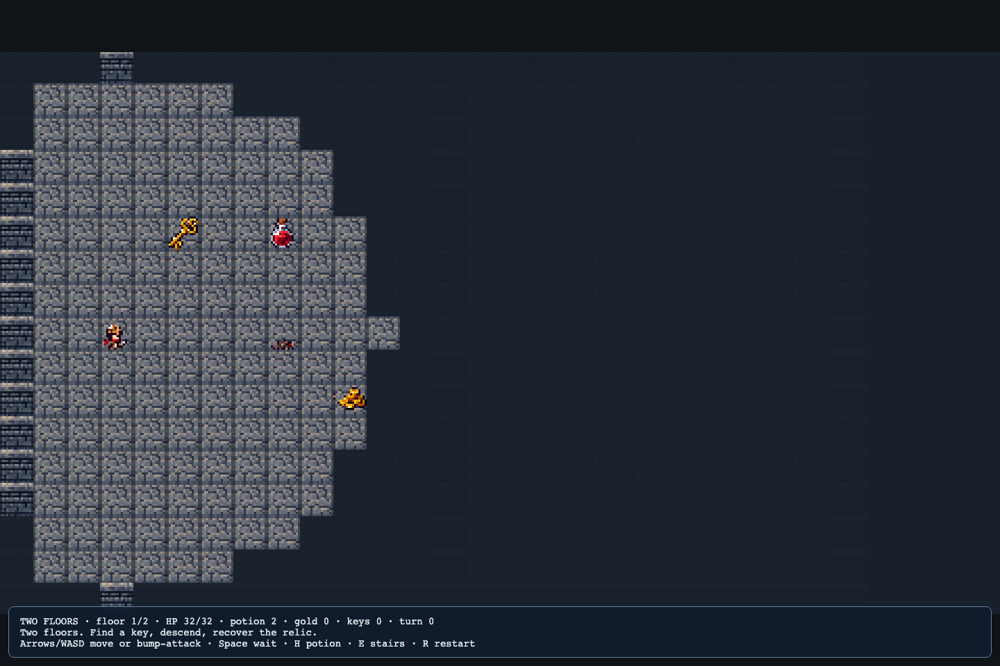
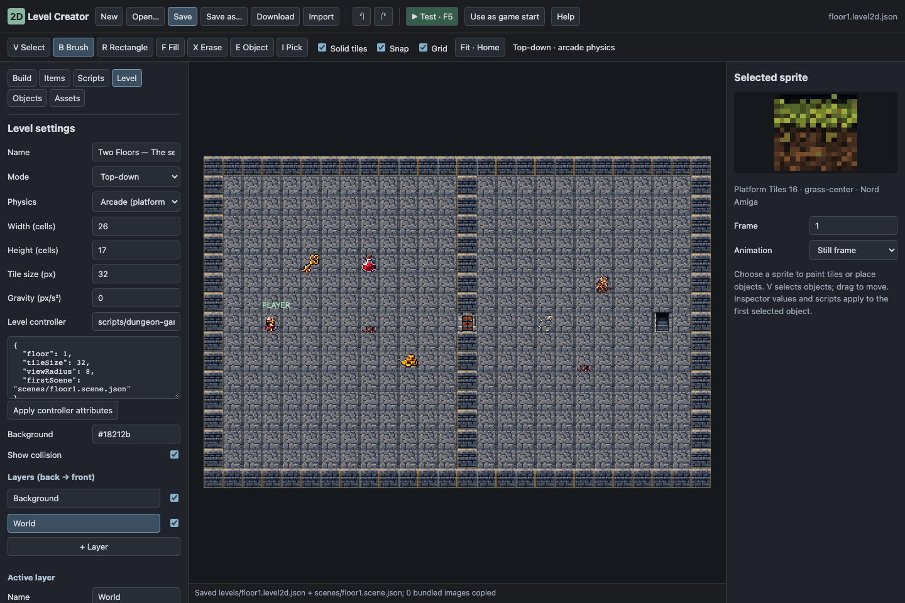
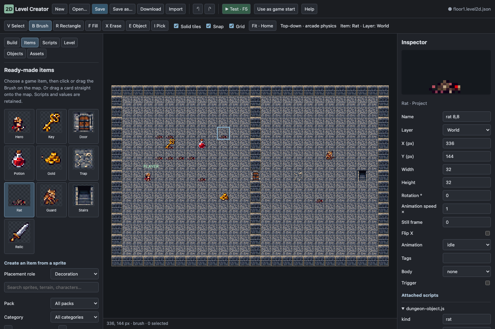

T29 Two Floors — edit a Shattered Pixel Dungeon adaptation
Project: welcome → 2D → Two Floors — Dungeon Creator. Create a project from the template. Result: enter a sewer, find a key, unlock a door, descend to a second floor and recover its relic.
This small adaptation uses Shattered Pixel Dungeon's accuracy/evasion comparison and rat statistics. It is GPL-3.0-or-later; the project includes LICENSE.md and SOURCE.md with the pinned upstream source. Art comes from Nord's original RetroPaxDungeons collection. It does not bundle Shattered Pixel Dungeon art or its full mobile game.
1. Learn the mechanics in the finished example#
Use main Play. Arrows/WASD step one cell. Moving into a monster bump-attacks instead of walking through it. Space waits a turn. H drinks a potion. Collect the key and walk into the central door to unlock it. Stand on or next to the stairs and press E. Floor two carries your HP, potions, gold, keys and turn count. Find its key and reach the relic. R restarts both floors.

| Action | Does the world advance? |
|---|---|
| Successful step | Yes: visible monsters move or attack. |
| Bump-attack | Yes, including a miss. |
| Wait / drink a potion | Yes. |
| Bump a wall or a locked door without a key | No. |
| Think without pressing a key | No. |
Damage first compares a random accuracy roll with a random defense roll. A hit rolls damage and subtracts armor; a miss deals zero. This example omits the full game's classes, buffs, hunger, randomized identification and procedural dungeon generator.
2. Open the first floor in the new editor#
Stop Play. Open 2D Level → Open → floor1.level2d.json. Home fits the map; wheel zooms; right/middle drag pans. The editor shows all objects even where the running game hides them with fog.

Keep Tile size 32 for this tutorial. The controller converts object pixel positions to cells using the same size. Put objects at cell centres: 3,8 is X=112, Y=272 because (cell + 0.5) × 32 gives the centre.
3. Change a route with tile tools#
- In Level, select the World layer.
- In Build, filter Pack → Project and find Dungeon masonry. Turn Solid tiles on and use B to add a short wall.
- Choose Dungeon floor, turn Solid tiles off, and paint a doorway through that wall.
- Use F5 to test the new route. Shift+Esc stops. Undo with Ctrl/Cmd+Z if you sealed the only passage.
- Use R to draw a rectangular area; F fills a connected region. X erases a tile entirely. For dungeon walkability, paint a non-solid floor over a wall when making a passage.
The sample's controller reads the compiled solid-tile colliders. Adding a wall therefore changes movement, pursuit and line of sight together. A floor picture with Solid tiles on is still a wall to the game.
Checkpoint: the hero cannot step through your new wall and can step through the opening you painted.
4. Inspect a monster rather than editing game code#
Choose Objects, search rat, then select one. Its Inspector has scripts/dungeon-object.js with fields such as:
| Field | Rat default / purpose |
|---|---|
| kind | rat selects monster behavior. |
| hp | 8 hit points. |
| accuracy | 8: attack-roll range. |
| defense | 2: evasion-roll range. |
| damageMin / damageMax | 1–4 before armor. |
| armor | 1: possible damage absorption. |
Change hp to 4, test a fight, then undo. Increase defense to see more missed attacks. These are saved instance attributes; you are editing this rat, not every rat globally.
Visible monsters pursue with a simple four-neighbor path search. Adjacent monsters attack. Hidden monsters wait until the hero comes into view. Fog uses a small line-of-sight model, rather than importing the full upstream visibility system.
5. Add your own enemy preset#
Items now lists ready-made game pieces: Rat, Guard, Potion, Key, Door, Stairs and Relic. Click Rat, keep B Brush active, and click or drag on the map. You can also drag its card directly onto the map. The placed rat keeps dungeon-object.js, its HP and other values. A translucent preview and the toolbar identify the selected item.

For a custom preset, select an existing rat → Save as variant → Small sewer rat. Open Assets, choose that reusable item, and brush it onto a clear floor cell. V selects it. Rename it and adjust hp/damage in Inspector.
Alternatively, Ctrl/Cmd+D duplicates a selected rat. Place the duplicate at a cell centre with Snap enabled. Reuse an existing scripted enemy so the dungeon-object.js attachment and attributes travel with it.
Save a second variant with kind guard, hp 18, accuracy 10 and defense 4. That produces a tougher guard using the same mechanics. To change artwork, choose a bank sprite, select the object again, then use its Use bank sprite Inspector button.
6. Build a key-and-door puzzle#
Select the existing key. Its script kind is key, value 1. Duplicate it and place the copy in a side room. Select the central door: kind is door. Walking into that door spends one key and opens the cell.
A door belongs on a gap in the solid wall. If you paint a solid tile under it, removing the door object still leaves the wall blocking the passage. Paint non-solid floor at the door cell.
The key/door relationship is a simple inventory count, not a named color-matching system. Gold uses kind gold; value controls the amount collected. A potion object adds to the potion count; H spends one to restore up to 12 HP.
7. Place a trap and tune survival#
Duplicate the existing trap. Its kind is trap; value is the HP lost when stepped on. Give it value 2 and place it beside a tempting gold pile. Testing consumes the trap once. Put a potion before a difficult fight to let players recover.
Select Player to change starting hp, accuracy, defense, damage and armor. Changes to the first-floor hero define a fresh run. Floor two carries the run's current supplies; pressing R begins from the first floor again.
8. Understand the floor controller#
In Level, the controller is scripts/dungeon-game.js. The Level controller attributes JSON contains:
{"floor":1,"tileSize":32,"viewRadius":8,"firstScene":"scenes/floor1.scene.json"}Change viewRadius to 5, click Apply controller attributes, then F5. The visible area becomes smaller. Restore 8. If you deliberately change the map tile size later, change the controller's tileSize to match it.
These controller values configure the game as a whole. Individual actor/item values live on the objects in Inspector.
9. Connect and edit the second floor#
Select the stairs object on floor one. Its kind is stairs and next is scenes/floor2.scene.json. That is the compiled scene path, not the authoring JSON path.
Save floor one with the basename floor1. Open floor2.level2d.json, rearrange a room, then Save with basename floor2. Its controller attributes use floor 2. The final relic is an object with kind relic; touching it wins.
F5 previews the currently open floor. To test the whole two-floor journey, save both maps, choose Use as game start on floor1, then main Play. Scene transitions load the saved second floor from the project.
Checkpoint: HP/supplies carry through the stairs and the second-floor relic produces victory.
10. Export, licence and troubleshooting#
Use the normal Nord Export command. Saved scenes, custom scripts, original art and licence documents go with the project. Keep LICENSE.md and SOURCE.md when sharing this GPL example and provide its corresponding source under those terms. The general Nord editor keeps its existing licence.
| Problem | Fix |
|---|---|
| Rat does nothing | It needs kind rat or guard; place it within visible/reachable floor. |
| Key appears but cannot be collected | Keep it at a cell centre, on non-solid floor, with the dungeon-object script attached. |
| Door still blocks after unlocking | Remove the solid tile underneath the door. |
| E cannot descend | Stand within one cell; check the stairs next scene path and save floor2. |
| Changes disappear on the next play | Save the authoring file with the matching floor basename. |
| Main Play starts on the wrong floor | Use as game start on floor1. |
Try a hidden potion room, a guard protecting the only key, or a narrow corridor where monsters must approach one at a time. Next: use the same editor for NES-style tank action.